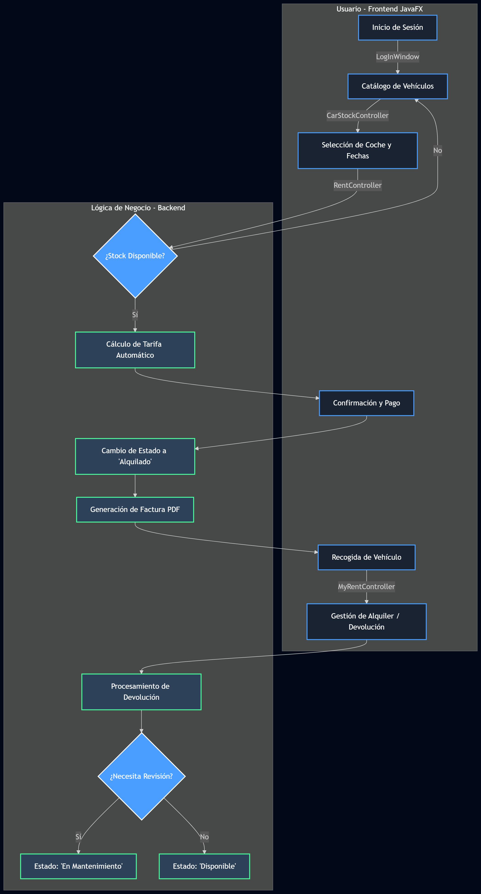

Para asegurar el cumplimiento de los objetivos, BizkaiKotxe emplea una metodología de seguimiento continuo basada en el registro de tiempos y tareas.
A continuación se detalla el flujo de actividad para el proceso crítico de Alquiler de Vehículo y Devolución:

Figura 1: Diagrama de actividad diseñado con Dia Diagram Editor.